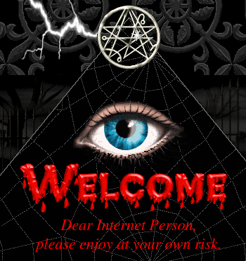

Blogs are neat - harking back to an age of a purer internet, with weird little ecosystems of personal home pages, with html and css written in Notepad++ and no logins or trackers in sight. I wanted to carve out such a weird little corner of the internet for myself and my projects and thoughts.

From Cameron's World - a 90's internet GeoCities nostalgia site.
A static site generator seemed like a decent enough compromise of the modern and the nostalgic/minimalist - serve html and css and js without any need for a database, server, content management system, and as little fluff as possible, without needing to actually write all of that html and css and js. You can also rest more or less assured that the site renders on different devices and browsers.
In order for this process to be enjoyable I needed to find the right combination of a generator and a template to start from. Having generally been interested in the Rust language lately I found Zola and Apollo.
Things I like about this combo:
- super fast to iterate, build, and serve
- change detection while iterating locally is immediate
- authoring in markdown
- support for
code syntax highlighting - static content such as images gets copied over to built site as expected (including plopping a favicon.ico in the content root)
- customizing the theme is intuitive
Getting a first version of a site up took very little time, and so far I've found everything to kind of work like I want it to. The design choice to install Zola as a single binary on your system and only have the template and content data in your repo sits right with me - no building of code or downloading of dependency trees, it's fast, reliable so far, and spits out useful errors when I break something.
The Apollo template was a lucky find - it's actually minimal and includes exactly the stuff I want to have: landing page, articles sorted by date, gallery of projects, and tags. Didn't love the Search feature but it was simple to turn off.
This is what the markdown the landing page is generated from looks like:
+++
template = "homepage.html"
+++
<style>
.homepage-hero {
text-align: center;
padding: 2rem 0;
}
.homepage-hero-title {
font-size: 3rem;
margin-bottom: 1rem;
}
.homepage-hero-subtitle {
font-size: 1.25rem;
margin-bottom: 1rem;
}
.homepage-footer {
font-size: 0.8rem;
}
.homepage-image {
display: block;
margin-left: auto;
margin-right: auto;
width: 50%;
}
</style>
<div class="homepage-hero">
<h1 class="homepage-hero-title">hi I'm julia! ✨</h1>
<img src="hx_space_inverted.png" alt="hx Space Inverted - abstract moody black and white image" class="homepage-image">
<p class="homepage-hero-subtitle">💜 ...and this is my blog. 💜</p>
</div>
# about
I like to make noise and art on computers and to ```write code```.
---
<div class="homepage-footer">
made with <a href="https://www.getzola.org/">Zola</a>, <a href="https://github.com/not-matthias/apollo">Apollo</a> and 💜 by julia.hx
</div>
I've opted to version my generator project and static site separately - I like to be a control freak about versioning drafts where a push to the authoring repo doesn't autmatically publish. For when I do want to publish I have added some bash/python scipting that runs zola build, copies the output to the static site repo, commits and pushes the changes.
Some more scripting will probably happen as I go along, for things such as making new posts. That way I can add cms-like features only where I really want them.
So far so good!